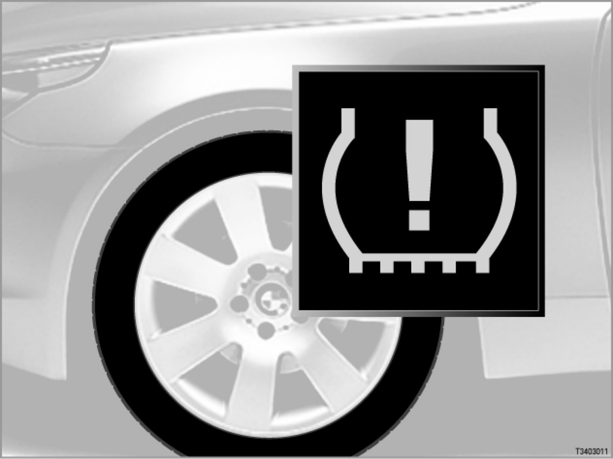

Run Flat Indicator All Models
36 01 04 (078)
Run Flat Indicator
All models

Introduction
The Run Flat Indicator (RPA) monitors the tire pressure throughout the journey.
The entire vehicle weight is carried by the air pressure in the tires. If the pressure in one of the tires should drop, the tire will gradually "cave in". The resulting flexing means that the defective tire will quickly receive additional damage. The tire could burst.
Some 80% of all flat tires are caused by small holes (e.g. caused by nails). The holes result in a gradual loss of pressure in the affected tire. Many "tire blowouts" can be traced back to preliminary damage caused by a gradual loss of pressure.
A gradual loss of pressure in one tire may remain unnoticed for a long time. The lack of pressure only makes itself clearly felt when driving when the tire is almost completely empty.
As tire pressure drops, the radius of the wheel and with it the tire's rolling circumference will also decrease. The upshot is that the wheel speed of the affected tire is increased.
The RPA records the wheel speeds using the wheel-speed sensors of the Dynamic Stability Control (DSC). The RPA compares the speeds of the individual wheels and computes an average speed. In this way the RPA is able to detect a loss of tire pressure.
The RPA detects a drop in pressure below about 30% ± 10% of the initial value. The RPA indicator and warning light indicates a drop in tire pressure. The RPA will indicate this after just a short distance, as a rule after a few minutes, from a certain minimum speed (e.g. 25 km/h) up to the permissible top speed.
> - Different control units for the Run Flat Indicator
> - E46 All-wheel drive [system overview ...]
> - E46, E53, E83, E85, E86 [system overview ...]
> - E60, E61, E63, E64 [system overview ...]
> - E65, E66 [system overview ...]
> - E70 [system overview ...]
> - E87, E90, E91, E92, E93 [system overview ...]
> - R56 [system overview ...]
Despite coming from different manufacturers the systems hardly differ from one model series to the next in the way they appear to the driver (initialization, RPA indicator and warning light, characteristics, diagnosis).
Important: Responsibility resides with the driver at all times
Check tire pressures regularly, at least twice a month and before embarking on lengthy journeys.
During initialization, the set tire pressure is taken as the initial value for the current set of tires.
If all 4 tires loose pressure at the same rate, the wheel speeds will also change at the same rate. The RPA is unable to detect a uniform drop in pressure in all tires (e.g. due to diffusion = natural loss of air from all 4 tires)
Important: Correct function of the Run Flat Indicator is not guaranteed when the emergency wheel is fitted.
As the emergency wheel has a much smaller diameter, the correct operation of the RPA can no longer be guaranteed.
Brief description of components
The SMG system comprises the following key components:
- 4 wheel-speed sensors
The wheel-speed sensors of the Dynamic Stability Control (DSC) measure the wheel speeds of the individual wheels.
- RPA button
> E46, E53, E83, E85, E86
The RPA button is only needed for initializing the PRA.
(RPA initialization means "teaching the system the tire pressures").
- CID: Central Information Display
Vehicles that are equipped with CID are initialized using the CID.
- On-board computer button and rocker switch on turn-signal/main-beam switch
> E87, E90, E91, E92, E93, R56
Initialization is performed on the LCD display, using the BC button and the rocker switch on the turn-signal/main-beam switch. The on-board computer functions are selected with the rocker switch.
The R56 does not have a rocker switch. The on-board computer functions are selected with the BC button.
The RPA software is in the following control units, depending on model series:
- RPA control unit
> E46 all-wheel drive
The E46 All-wheel drive has a separate RPA control unit.
The 4 wheel-speed sensors measure the wheel speeds. The DSC control unit sends the signals through 4 direct wires to the RPA control unit.
Alternatively
- ABS control unit with additional software for Run Flat Indicator
> R56
The ABS control unit is standard equipment on the R56. RPA is integrated into the DSC control unit by means of additional software.
Alternatively
- ASC+T control unit with additional software for Run Flat Indicator
> R56
ASC+T is special equipment on the R56 (ASC+T: Automatic Stability Control plus Traction). RPA is integrated into the ASC+T control unit by means of additional software.
Alternatively
- DSC control unit with additional software for Run Flat Indicator
> E46, E53, E60, E61, E63, E64, E70, E83, E85, E86, E87, E90, E91, E92, E93
> R56: Optional equipment
With the DSC Mk60 and DSC 8, the RPA is integrated in the DSC control unit using additional software (The E70 is equipped with DSC 8 Premium).
Alternatively
- CIM: Chassis Integration Module
> E65, E66
The CIM controls:
- Servotronic
- Steering column adjustment
- Run Flat Indicator (RPA)
The following control units are involved in the Run Flat Indicator system (in alphabetical order):
- CAS: Car Access System
> E60, E61, E63, E64, E65, E66, E70, E87, E90, E91, E92, E93, R56
The CAS control unit provides input signals relating to terminal status
(e.g. terminal 15 ON).
- GM: General module
> E46, E53, E83, E85, E86
The general module provides input signals relating to terminal status
(e.g. terminal 15 ON).
- JBE: Junction box electronics
> E70, E87, E90, E91, E92, E93, R56
The JBE is the data interface (= gateway) between the K-CAN and the PT-CAN. (K-CAN stands for "Body Controller Area Network"; PT-CAN stands for "Powertrain Controller Area Network")
The junction box consists of the junction box electronics and the electrical distribution center.
- KGM: Body gateway module
> E60, E61, E63, E64 from 09/05
The body gateway module (KGM) replaces the safety and gateway module (SGM).
The KGM forms the data interface (= gateway) between the K-CAN and the PT-CAN.
- M-ASK or CHAMP or CCC: Multi-audio system controller or multimedia platform or Car Communication Computer
M-ASK or CCC or CHAMP (multimedia platform: CHAMP; Central Head Unit and Multimedia Platform) issues an acoustic warning through the loudspeakers if the tire pressure should drop.
(On vehicles without M-ASK or CCC or CHAMP, the instrument cluster will emit the warning.)
- SGM: Safety and gateway module
> E60, E61, E63, E64 up to 09/05
> E65, E66 from 03/04
The SGM is the data interface (= gateway) between the K-CAN, byteflight and the PT-CAN.
- SZL: Steering column switch cluster
> E87, E90, E91, E92, E93, R56
The signals from the on-board computer button and from the rocker switch are recorded and processed in the SZL. The data is transmitted to the instrument cluster (on-board computer).
- ZGM: Central gateway module
> E65, E66 until 03/04
The ZGM forms the data interface (= gateway) between the K-CAN and the PT-CAN.
- KOMBI and CID: Instrument cluster and Central Information Display
A fault in the RPA or drop in tire pressure will be indicated by the RPA indicator and warning light in instrument cluster.
At the same time, the symbol will light up in the LCD display.
Faults registered by the RPA are indicated as follows by the RPA indicator and warning light (for variations, please refer to national version):
- The RPA indicator and warning light lights up:
- Red (with acoustic signal):
Drop in tire pressure more than approx. 30% ± 10%.
Driving safety is no longer guaranteed.
- Yellow:
RPA failed
Information about the check control message can be called up in the CID (CID is fitted depending on the vehicle's equipment).
System functions
The Run Flat Indicator (RPA) comprises the following functions:
- Self-test
- Initialization
- Detects drop in tire pressure
- Visual and acoustic warning
- Actively reduce the load on the defective wheel (E70 only)
Self-test
The RPA performs a self-test when terminal 15 is switched ON. A fault in the RPA is indicated by the RPA indicator and warning light and by a symbol in the LCD display.
Initialization
Initialization is started manually (e.g. by pressing the RPA button). Once it has been started, initialization will continue through to complete calibration. This process may be interrupted any number of times.
It is important that the vehicle is driven away immediately after initialization is started. The system will not start calibration until the vehicle is driven away. Even a terminal change will not change this.
In principle, calibration is only possible while the vehicle is being driven (road speeds above 25 km/h).
Initialization will run as a fully automatic calibration sequence (after the journey has started). In other words, the circumference of individual tires are recorded and evaluated.
To allow a drop in tire pressure to be detected, the system considers different speed ranges and driving situations. Taking account of the driving situation means that the system has to be primed for each speed range individually.
From 09/04 (starting with E87), these speed ranges and driving situations have been combined into 3 calibration ranges. This means greater clarity for output via the BMW diagnosis systems Group Tester One (GT1) and DISplus.
The initialization phase lasts approx. 5 to 15 minutes for the individual speed ranges. The end of the initialization phase is not indicated.
A visual and acoustic warning can only be emitted in the speed ranges that have been calibrated by at least 67 percent.
The calibration process can be delayed by:
- dynamic driving
- a road with lots of bends
- frequent changes in load (only on vehicles with electronic height control -> air spring/height control regulation)
Detects drop in tire pressure
The RPA records the wheel speeds using the wheel-speed sensors from the DSC. The RPA compares the speeds of the individual wheels and computes an average speed. In this way the RPA is able to detect a loss of tire pressure. (In the event of a tire losing pressure, the tire rolling circumference of the affected tire is also reduced.)
Visual and acoustic warning
A drop in pressure in one tire of approx. 30% ± 10% from the initial value is indicated by the RPA indicator and warning light. In addition, an acoustic signal sounds.
Signal output: Depending on the model concerned, either via the instrument cluster or the multi-audio system controller (M-ASK) / Car Communication Computer (CCC).
Note: DSC malfunction
The sensors used by the RPA are all monitored by the DSC. If DSC detect a fault, the RPA will also register a malfunction.
Actively reducing load on defective wheel
> E70
If the RPA detects a flat tire on one of the rear wheels, the electronic height control will actively reduce the load on the wheel concerned. The body will then assume a slightly inclined attitude. As soon as the flat tire has been repaired and the RPA reinitialized, the inclined attitude will be levelled out again. No work is needed on the air suspension itself.
Special conditions for system function
The following driving conditions may cause a delay in the warning being given in the event of a drop in tire pressure:
- Heavy braking
- Rapid acceleration
- High rate of lateral acceleration
- Cornering (in a tight corner)
- Vehicle speed dropping below a minimum speed (the RPA only responds when a certain minimum speed has been reached)
- Large difference in slip (between axles or between wheel on one side of vehicle)
- Initialization not being completed in current speed range (see "Controls")
- Winter conditions
- Heavy changes in load (only vehicles with electronic height control)
The following operating conditions may cause a delay in the warning being given in the event of a drop in tire pressure:
- Driving with snow chains fitted
Driving with snow chains may impair the correct function of the RPA.
The system will work as normal again after the snow chains have been removed and the vehicle is driven for a few minutes. (Repeat initialization not necessary.)
Note: Do not perform initialization when snow chains are fitted.
Initialization and snow chains will cause incorrect adaptation values.
- Trailer towing
Initialization should be performed when a trailer with a weight greater than approx. 300 kg is being towed.
Repeat the initialization process after detaching or unloading the trailer.
- Old/new tires
Note: Only fit tires with the same tread depth!
Avoid fitting tires with greatly different tread depth (from approx. 2 millimeters) on one axle. The different diameters mean that the correct operation of the RPA is no longer guaranteed.
The following situations may cause unnecessary warnings:
- Initialization not completed after a tire has been replaced (old/new tires, summer/winter tires, change in direction of rotation, or replacement of single defective tire) tire pressures have been changed
- Tires have different levels of wear
- Frequent changes in load (only on vehicles with electronic height control)
- Tires that have not been approved by BMW
- Damaged tires, even if no loss of pressure can be detected (e.g. spin imbalance)
- Tire has changed slightly during the running-in phase (settling)
In the following cases, the system will not emit a warning despite a drop in tire pressure being detected:
- The same amount of pressure is lost in 2 or more tires.
- Drops in tire pressures caused by diffusion and affecting all 4 tires equally
- If a tire is damaged with a sudden loss of all pressure (tire blow-out, warning is given too late)
Operation
The Run Flat Indicator (RPA) is initialized using the following control elements:
- RPA button
- On-board computer button on turn-signal/main-beam switch
- With iDrive in the Central Information Display (CID) with the controller
Important: Always perform initialization immediately after correcting the tire pressure, especially if a tire is changed or the wheels are interchanged. Only check tire pressures when the tires are cold.
Set the tires to the correct pressure before performing initialization. During initialization, the set tire pressure is taken as the initial value for the current set of wheels.
Correct the tire pressures when the tires are cold to prevent the data recorded from being affected by temperature.
Important: Responsibility resides with the driver at all times
Check tire pressures regularly, at least twice a month and before embarking on lengthy journeys. During initialization, the set tire pressure is taken as the initial value for the current set of tires.
Initialize the RPA in the following situations:
- If tire pressure is changed
(tire pressure is corrected or reset)
- If the position of the tires is changed (change of axles, wheels), even if the tire pressure is not changed
- If a tire is changed or the wheels are interchanged
(e.g. old tires for new tires, summer tires for winter tires, etc.)
Start initialization as follows:
- Terminal 15 ON
(engine OFF or ON, do not pull away)
- Vehicles with RPA button
- Press and hold the RPA button until the RPA indicator and warning light lights up yellow for a few seconds
- Vehicles with BC button (on-board computer function)
- In the on-board computer function select "RPA" and "INIT" (LCD display) with the rocker switch on the turn-signal/main-beam switch. Press the BC button to confirm.
- Press and hold the BC button for approx. 5 seconds, until a box with a tick appears behind the "INIT" display.
> R56:
- In the on-board computer function select "SET/INFO" (LCD display in auxiliary instrument) with the BC button on the turn-signal/main-beam switch.
- Press and hold the BC button until the display changes
- Press the BC button repeatedly until the corresponding symbol and the word "RESET" are displayed.
- Press and hold the BC button until a square with a tick appears.
- Vehicles with Central Information Display
Initialization is performed via the Central Information Display (CID) and controller.
- Select "RPA" in the "Settings" menu and confirm.
- Select "Set" and confirm.
- Drive off
The end of the initialization phase is not indicated.
Preconditions for activation
The Run flat Indicator (RPA) is automatically activated when terminal 15 is switched ON. The RPA cannot be switched off manually.
Notes for service staff
Service staff should note the following points:
- General information:
- Diagnosis: ---
- Encoding/programming:
US national version
A flat tire is indicated as follows:
> - E53, E83, E85, E86
Yellow RPA indicator and warning light without acoustic signal
> - E60, E61, E63, E64, E65, E66, E70, E90, E91, E92, E93, R56
Yellow RPA indicator and warning light with acoustic signal
An RPA failure is indicated as follows:
- Yellow RPA indicator and warning light without acoustic signal
Subject to change.